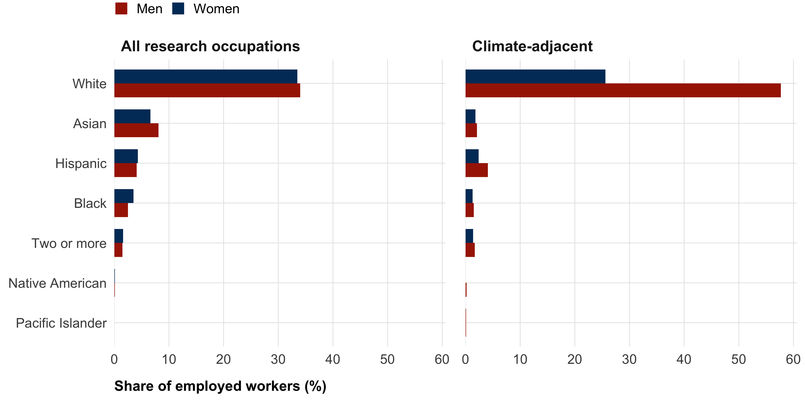
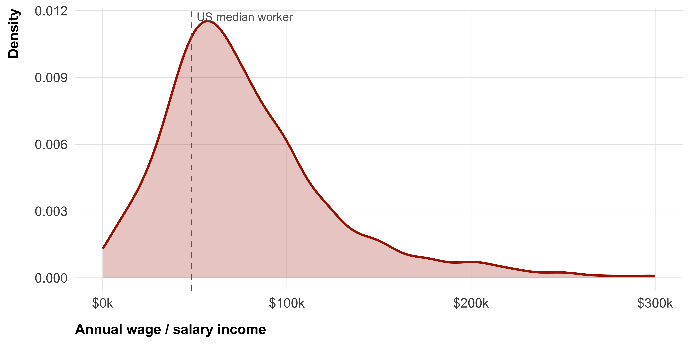
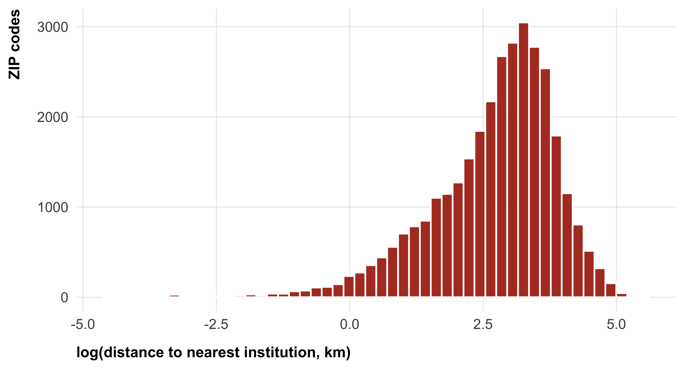
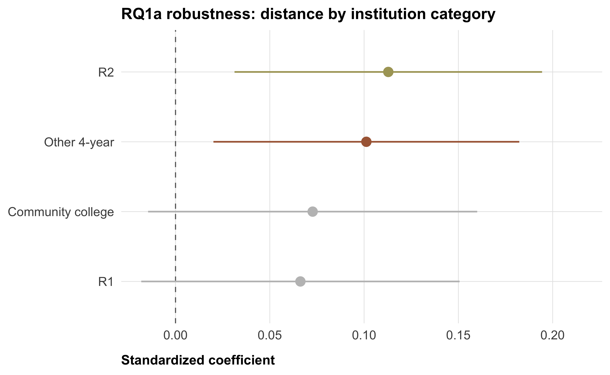
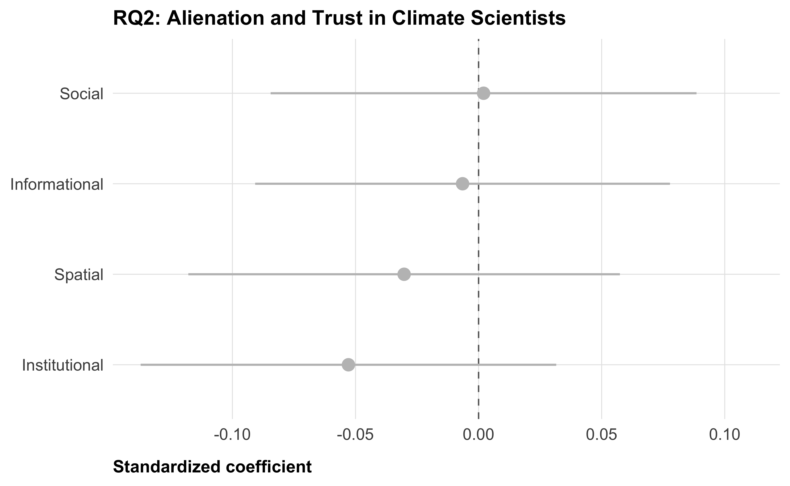
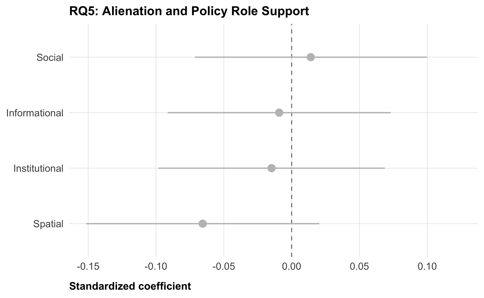

Preregistration: Alienation and Trust in Climate Scientists in the US
Abstract
Trust in climate scientists is declining and deeply polarized in the United States. Prominent psychological accounts attribute distrust to cognitive deficiencies — lack of knowledge, motivated reasoning, or conspiracist thinking — treating distrust as a product of individual irrationality. We test an alternative: the alienation model of science distrust, which holds that distrust stems from structural exclusion from science rather than individual cognitive failings. People who are structurally excluded from science — institutionally, socially, geographically, or informationally — will be more likely to feel alienated from science, and therefore more likely to distrust scientists. This distrust may be rational: those who are structurally excluded from an institution have less influence over its decisions, which increases their vulnerability and may warrant greater wariness. We derive and test specific individual-level predictions of the alienation model using data from a large, nationally representative US sample (N ≈ 22,000). All analyses are correlational, and all hypotheses and analytical procedures are pre-registered prior to data collection.
Important
Placeholder data. The megastudy dataset used throughout is simulated random noise with the expected structure. The data has not been collected yet (except for a small pilot of N=200 to check for technical issues before the main survey launch—none of this data has been analyzed.)
Background
Earlier this year, the United States has formally withdrawn from the Paris Agreement for a second time. It has also imposed important budget cuts to research institutions, in particular research on climate change. In 2022, 24% of Americans believes agreed with the statment “climate change is a hoax and scientists touting its existence are lying.” The share of Republicans and Republican-leaning independents who say the country should prioritize oil, coal and natural gas over wind and solar power has doubled to 71% over the last six years. Kennedy and Kikuchi (2026). Given the climate crisis, understanding theses trends in public opinon and politics is crucial to effectively act.
A critical predictor of climate change belief and policy support is trust in climate scientists. To acknowledge climate change, assess its urgency, and find effective way of mitigate it, the public has to rely on climate scientists’ findings. In the United states, as in other countries, climate scientists are less trusted than scientists in general (Ghasemi et al. 2025). Trust in climate scientists is also particularly polarized along partisan lines.
Much of the existing literature explains distrust in scientists through individual-level psychological mechanisms: people distrust scientists because they lack scientific knowledge, engage in motivated reasoning, or hold conspiracist or populist thinking styles. These accounts share a common assumption — that distrust reflects some form of cognitive failure or irrationality on the part of the distruster.
The alienation model of science distrust, proposed by Gauchat (Gauchat 2011, 2012), offers an alternative. Rooted in the work of theorists, the model argues that increasingly complex societies require increasingly specialized governance expertise, producing technocratic institutions run by knowledge elites. Those who are excluded, or alienated from these institutions experience a loss of agency and, ultimately, distrust.
The alienation model stands in contrast to many individual-level psychological models, because it provides an explanation of distrust in science that does not need be irrantional: Trust is generally defined as accepting vulnerability towards someone (Mayer, Davis, and Schoorman 1995), and definitions of trust in science rely on the same idea (Wintterlin et al. 2022). People who are alienated from an instutions—who have no influence over an institution’s decisions—are more vulnerable to decisisons made by this institution (Desmond 2022). As a result, for a same level of trust, alienated people need to accept more vulnerability than other people. As a consequence, reduced levels of trust in scientific institutions might in fact be rational, for people with lower socio-economic status, who typically could be part of these institutions (Desmond 2022).
However, the alienation model lacks both a clear theoretical framefork for what alienation is, as well as a direct empirical test of the model. In his empirical work, Gauchat (2012) only tested the high-level prediction that trust in science should have declined over time, given increasing technocratization, for which he did not find evidence. In this paper, we begin by defining alienation and proposing different theoretical dimensions. We then propose structural measures of alienation. Next, building on a large scale survey of 22,000 US adults, we test whether these structural measures are associated with subjective perceptions of alienation. We then test whether perceived alienation, in turn, is associated with lower trust in climate scientists. We further test whether perceptions of alienation are associated with lower trust in particular among people who have a strong need for epistemic autonomy—people who, e.g., want to figure things out for themselves instead of relying on others. Finally, we test some additional predictions of the alienation model, namely that perceptions of alienation should be associated with certain trust dimensions more than others, and that they should also be associated with
Theoretical Framework
We define alienation as a lack of access to climate scientists, climate science, and climate science institutions. We distinguish between four dimensions of alienation, informed by research on psychological distance to science (Rutjens 2025; Veckalov, Amodio, and Rutjens 2024):
Institutional alienation refers to the lack of representation within and influence over scientific institutions.
Social alienation refers to the social distance between oneself and climate scientists as people—different socio-demographic backgrounds and values.
Spatial alienation refers to geographic distance from scientific institutions, and the perceived local impact of these institutions.
Informational alienation refers to limited exposure to scientific information—through education, but also through news, social media, personal conversations, or in-person events.
In the measurement section, we attempt to translate these dimensions into specific measures of structural and perceived alienation.
Research Questions
Structural predictors of alienation
RQ1a — Spatial distance and spatial alienation: Do people who live further from scientific institutions — operationalized as geographic distance from the nearest postsecondary institution — report higher spatial alienation? This tests whether objective geographic distance predicts perceived distance. As robustness checks, we re-estimate the same association using per-category nearest distances (R1, R2, other 4-year, community college) and counts of institutions within 50 km.
RQ1b — Income and social alienation: Do people with lower household income report higher social alienation? Climate-adjacent scientists earn substantially more than the median US household. This RQ tests whether participants who are economically distant from this earnings bracket also feel socially distant from scientists.
RQ1c — Demographic underrepresentation and institutional/social alienation: Do people who are demographically underrepresented among climate scientists — by race or gender — report higher institutional and social alienation? This tests whether self-reported perceptions of alienation map onto objective indicators of demographic underrepresentation in the scientific workforce.
We have no objective structural correlate for informational alienation; we therefore do not ask a parallel RQ for that dimension.
Perceived alienation and trust
RQ2 — Alienation predicts distrust: Are perceptions of alienation associated with trust in climate scientists? We test the four dimensions of alienation separately.
RQ3 — Epistemic autonomy as moderator: People with a high need for epistemic autonomy, who are motivated to form their own judgments rather than defer to authorities, should be particularly distrusting of climate scientists when they experience alienation. Does need for epistemic autonomy moderate the relationship between alienation and distrust, such that the alienation–distrust association is stronger among high-autonomy individuals? We test the four dimensions of alienation separately.
Further predictions from the alienation model
RQ4 — Alienation and dimensions of trust: Alienated people may still recognize climate scientists’ technical competence but have more reason to doubt their benevolence, integrity, and openness — dimensions of trust that reflect whether an institution acts in one’s interest rather than merely whether it is capable. We therefore ask whether alienation is more strongly associated with distrust along the dimensions of benevolence, integrity, and openness than along the dimension of competence.
RQ5 — Alienation and policy role: People who are alienated from climate scientists may be more resistant to granting scientists a role in shaping public policy. We ask whether alienation predicts opposition to scientists having influence over climate policy.
Data
Structural alienation
For the demographic and income composition of the US scientific workforce, we use the American Community Survey (ACS) 5-year Public Use Microdata Sample, 2018–22, accessed via the tidycensus R package. Occupation is identified using Census detailed occupation codes (OCCP); we report two scopes — all research/academic occupations and climate-adjacent occupations (atmospheric, geological, ecological, environmental). Details and code are in data-prep/scientist_demographics.qmd.
For the spatial distribution of scientific institutions, we use the IPEDS Header/Directory file (HD2022) from the National Center for Education Statistics, covering all US postsecondary institutions. ZIP-code centroid coordinates come from the zipcodeR R package. Details and code are in data-prep/institutions.qmd.
Perceived alienation
We use pre-treatment data from the Strengthening trust in climate scientists megastudy (N ≈ 22,000), a large collaborative experiment testing 20 interventions to strengthen trust in climate scientists in the United States. Participants are recruited from a national, non-probability opt-in panel (CloudResearch) with cross-quotas on gender × age and gender × race based on 2024 US Census Bureau population estimates. A detailed preregistration of the project can found on this webiste: https://janpfander.github.io/trust_climate_scientists/preregistration/preregistration.html
This project presents correlational analyses of the megastudy pre-treatment measures. At the point of this registration, a small pilot sample (N=200) has been run for the megastudy project, to test technical issues. The main data collection has not begun. No data has been analyzed..
Measures
Structural alienation
To measure social and institutional distance, we assess the demographic representativeness of both scientists in general and climate scientists more specifically. We assess the race/ethnicity and gender composition, as well as wages of US scientists with the ACS 5-year PUMS (2018–22). As shown in Figure 1, women and racial minorities are underrepresented among both scientists in general and climate scientists in particular. Figure 2 shows the distribution of wages earned by climate scientists, comparing it to the median American wage. To measure spatial distance, we compute the geodesic distance (dist_inst_km) from every continental US ZIP-code centroid to the nearest postsecondary institution listed in IPEDS HD2022, using ZIP-code centroid coordinates (Figure 3). The universe includes all institutions granting degrees at the 2-year level or higher; trade and cosmetology schools are excluded. We use log(dist_inst_km) in analyses (right-skewed distribution). As robustness checks we additionally compute per-category nearest distances (dist_r1_km, dist_r2_km, dist_other4_km, dist_cc_km) and counts within a 50 km radius (n_within_50km and per-category variants). We do not provide a structural measure for informational distance.


Perceived alienation
Except for informational alienation, all items use a 7-point agree/disagree response scale (1 = strongly disagree, 7 = strongly agree). Higher scores indicate greater alienation. We will use composite scores (the mean) of all items present in one dimension.
Institutional alienation (2 items)
- The prospect of working as a climate scientist has always seemed beyond my reach.
- Careers in climate research are accessible only to a privileged few.
Spatial alienation (2 items)
- Climate science has no positive impact on my local area.
- Very few climate scientists live or work in my local area.
Informational alienation (6 items)
“How often do you see or hear information about climate change in the following places?”
- Traditional media (e.g., newspapers, TV, radio)
- Online news (e.g., news websites, podcasts, YouTube)
- Social media (e.g., Facebook, TikTok, Instagram)
- Fiction (e.g., films, series, books, comics)
- Personal conversations (e.g., talking with friends or family, text messages, messaging apps)
- In-person events (e.g., museums, public talks)
Response options: 1 = Never, 2 = Rarely, 3 = Occasionally, 4 = Frequently, 5 = Very frequently. Items are reverse-coded before computing the composite, so that higher scores indicate less exposure (more informational alienation).
Trust in climate scientists
Single-item trust (primary outcome)
The primary outcome is a single-item trust measure, assessed pre-treatment in the megastudy (trust_pre):
“How much do you trust climate scientists?” (slider, 0–100).
Because it is measured pre-treatment, this item is available for the full sample (N ≈ 22,000) and is not confounded by intervention exposure.
Single-item distrust (robustness outcome)
As a robustness check, we also use a single-item distrust measure (distrust_post):
“How much do you distrust climate scientists?” (slider, 0–100).
Trust and distrust are sometimes treated as opposite ends of a single continuum, but they may also capture distinct constructs (e.g., one can simultaneously trust scientists on some questions and distrust them on others). Running our trust analyses in parallel with distrust as the outcome allows us to check whether the two measures yield similar inferences.
Because this item is asked post-treatment in the megastudy, robustness analyses using distrust_post are restricted to control group participants only to avoid confounding by intervention exposure.
Multidimensional trust (robustness outcome for RQ4, 12 items)
For RQ4 (alienation and the dimensions of trust), we use a more detailed 12-item trust scale covering four subdimensions (3 items each), assessed on 0–100 sliders (0 = most negative, 100 = most positive); see Table 1. Subdimension composites are computed as the mean of the three items within each subdimension. The overall composite (trust_multidimensional) is the mean of all 12 items.
As with single-item distrust, this scale is asked post-treatment in the megastudy, so analyses using it are restricted to control group participants only.
| Subdimension | Items (bipolar anchors) |
|---|---|
| Competence | incompetent–competent; unintelligent–intelligent; unqualified–qualified |
| Integrity | dishonest–honest; unethical–ethical; insincere–sincere |
| Benevolence | unconcerned–concerned; uneager–eager to improve lives; inconsiderate–considerate |
| Openness | not open–open to feedback; unwilling–willing to be transparent; little–great attention to others' views |
Need for epistemic autonomy (6 items)
[Beebe et al. (2019); adapted]
“Please indicate how much you agree or disagree with the following statements” (1 = strongly disagree, 7 = strongly agree):
- I like to think things through for myself.
- I like to figure things out for myself.
- I like to make up my own mind about things.
- I only believe something if I can see for myself that it is true.
- I don’t go along with the opinions of others without thinking things through for myself.
- I have never really questioned the things I have been taught to believe. [reverse-scored]
We will use a composite measure (mean) of all items items, reverse-coding item 6.
Demographics
- ZIP code participant’s zipcode
- Income: 5-level ordinal (<$30k to ≥$168k). For RQ2, we convert each bracket to its midpoint and divide by \(\sqrt{\text{household size}}\) to obtain equivalised income.
- Household size: 6-level ordinal (1 to 6 or more). Used in RQ2 to compute the equivalence scale.
- Race/ethnicity: White, Black, Hispanic, Asian, Other (categorical)
- Gender: Male, Female, Other
Policy role of scientists (4 items)
Four items assessing support for climate scientists having a role in the policy-making process, adapted from Cologna et al. (2025). We removed two items from their scale: one because it was not strictly applicable to the construct (“Climate scientists should remain independent from the policy-making process”), and the other because it was not policy-related (“Climate scientists should communicate their findings to the general public”). We also use sliders rather than a 5-point Likert response scale.
“To what extent do you agree or disagree with the following statements?” (slider, 0 = Strongly disagree, 100 = Strongly agree):
- Climate scientists should work closely with policy makers to integrate scientific results into policy-making.
- Climate scientists should actively advocate for specific policies.
- Climate scientists should communicate their findings to policy makers.
- Climate scientists should be more involved in the policy-making process.
We will use a composite score (policy_role_mean), the mean of all four items.
Analysis Plan
Overview
All models are estimated using OLS regression with heteroskedasticity-robust standard errors (HC2, via the sandwich package). All continuous predictors and outcomes are standardized (z-scored) before model fitting, so reported coefficients are standardized betas and directly comparable across dimensions. Within each hypothesis and research question, multiple comparisons are corrected using the Benjamini-Hochberg (BH) false discovery rate procedure (Benjamini and Hochberg 1995).
Code chunks below demonstrate each analysis on simulated data. Function definitions are printed before their first use so the exact model specification is part of the preregistration record.
run_ols_model <- function(data,
outcome,
predictor,
covariates = NULL,
standardize_predictors = TRUE) {
vars <- c(outcome, predictor, covariates)
df <- data |> select(all_of(vars)) |> drop_na()
if (standardize_predictors) {
df <- df |> mutate(across(where(is.numeric), standardize))
}
rhs <- paste(c(predictor, covariates), collapse = " + ")
formula <- as.formula(paste(outcome, "~", rhs))
fit <- lm(formula, data = df)
se_hc2 <- vcovHC(fit, type = "HC2")
tidy(coeftest(fit, vcov = se_hc2)) |>
filter(str_starts(term, predictor) & term != "(Intercept)") |>
mutate(
conf.low = estimate - 1.96 * std.error,
conf.high = estimate + 1.96 * std.error,
outcome = outcome,
predictor = predictor,
n = nrow(df)
)
}alienation_dims <- c(
"alien_inst_mean", "alien_social_mean",
"alien_spatial_mean", "alien_info_mean"
)RQ1a: Spatial distance and spatial alienation
We regress spatial alienation on log-transformed geographic distance to the nearest postsecondary institution. We do not include covariates. This is a single test; no BH correction needed.
rq1a_result <- run_ols_model(
data |> mutate(log_dist_inst_km = log(dist_inst_km)),
outcome = "alien_spatial_mean",
predictor = "log_dist_inst_km"
)
rq1a_result |>
select(predictor, estimate, std.error, statistic, p.value, n) |>
mutate(predictor = "log(distance to institution, km)") |>
rounded_numbers() |>
rename(Predictor = predictor, Beta = estimate, SE = std.error,
t = statistic, p = p.value, N = n) |>
tt(caption = "RQ1a: Geographic distance predicting spatial alienation")| Predictor | Beta | SE | t | p | N |
|---|---|---|---|---|---|
| log(distance to institution, km) | 0.084 | 0.044 | 1.933 | 0.054 | 500 |
Robustness: distance to each institution category
The primary measure collapses all institution categories — R1, R2, other 4-year, and community college — into a single “nearest institution.” It is plausible that proximity to different kinds of institutions has different psychological consequences. In particular, community colleges are far more numerous and demographically more representative of their surrounding communities than research universities, so proximity to a community college may reduce spatial alienation more strongly (or, conversely, only research-active institutions may matter). To examine this, we re-estimate the RQ1a model four times, replacing log(dist_inst_km) with the log-distance to the nearest institution of each category (dist_r1_km, dist_r2_km, dist_other4_km, dist_cc_km). BH correction is applied across the four tests.
distance_vars <- c("dist_r1_km", "dist_r2_km", "dist_other4_km", "dist_cc_km")
rq1a_category_results <- map_dfr(distance_vars, \(d)
run_ols_model(
data |> mutate(log_d = log(.data[[d]])),
outcome = "alien_spatial_mean",
predictor = "log_d"
) |>
mutate(predictor = d)
) |>
mutate(p_adjusted = p.adjust(p.value, method = "BH"))
rq1a_category_results |>
select(predictor, estimate, std.error, statistic, p.value, p_adjusted, n) |>
mutate(predictor = recode(predictor,
dist_r1_km = "R1",
dist_r2_km = "R2",
dist_other4_km = "Other 4-year",
dist_cc_km = "Community college"
)) |>
rounded_numbers() |>
rename(
Category = predictor, Beta = estimate, SE = std.error,
t = statistic, p = p.value, `p (BH-adj)` = p_adjusted, N = n
) |>
tt(caption = "RQ1a robustness: log(distance to nearest institution) predicting spatial alienation, by category")| Category | Beta | SE | t | p | p (BH-adj) | N |
|---|---|---|---|---|---|---|
| R1 | 0.066 | 0.043 | 1.538 | 0.125 | 0.125 | 500 |
| R2 | 0.113 | 0.042 | 2.712 | 0.007 | 0.028 | 500 |
| Other 4-year | 0.101 | 0.041 | 2.446 | 0.015 | 0.030 | 500 |
| Community college | 0.073 | 0.045 | 1.633 | 0.103 | 0.125 | 500 |

Robustness: institution density (count within 50 km)
As a second robustness check, we use a count-based measure of local “science density”: the number of institutions within a 50 km radius of the participant’s ZIP-code centroid. This shifts the construct from “distance to the single closest institution” to “how many institutions are nearby.” We re-estimate the model four times, once per category, using log(1 + n_X_within_50km) (log-1-plus to accommodate zeros). BH correction is applied across the four tests.
density_vars <- c("n_r1_within_50km", "n_r2_within_50km",
"n_other4_within_50km", "n_cc_within_50km")
rq1a_density_results <- map_dfr(density_vars, \(v)
run_ols_model(
data |> mutate(log_n = log1p(.data[[v]])),
outcome = "alien_spatial_mean",
predictor = "log_n"
) |>
mutate(predictor = v)
) |>
mutate(p_adjusted = p.adjust(p.value, method = "BH"))
rq1a_density_results |>
select(predictor, estimate, std.error, statistic, p.value, p_adjusted, n) |>
mutate(predictor = recode(predictor,
n_r1_within_50km = "R1",
n_r2_within_50km = "R2",
n_other4_within_50km = "Other 4-year",
n_cc_within_50km = "Community college"
)) |>
rounded_numbers() |>
rename(
Category = predictor, Beta = estimate, SE = std.error,
t = statistic, p = p.value, `p (BH-adj)` = p_adjusted, N = n
) |>
tt(caption = "RQ1a robustness: log(1 + count within 50 km) predicting spatial alienation, by category")| Category | Beta | SE | t | p | p (BH-adj) | N |
|---|---|---|---|---|---|---|
| R1 | 0.039 | 0.043 | 0.894 | 0.372 | 0.496 | 500 |
| R2 | -0.040 | 0.045 | -0.896 | 0.371 | 0.496 | 500 |
| Other 4-year | -0.001 | 0.043 | -0.032 | 0.974 | 0.974 | 500 |
| Community college | 0.077 | 0.045 | 1.697 | 0.090 | 0.361 | 500 |
RQ2: Alienation and trust
For each of the four alienation dimensions, we run separate regressions. We regress the single-item pre-treatment trust measure (trust_pre) on the respective alienation composite. We do not include covariates. BH correction is applied across the four tests (one per dimension).
rq2_results <- map_dfr(alienation_dims, \(pred)
run_ols_model(data, outcome = "trust_pre", predictor = pred)
) |>
mutate(p_adjusted = p.adjust(p.value, method = "BH"))
rq2_results |>
select(predictor, estimate, std.error, statistic, p.value, p_adjusted, n) |>
mutate(predictor = str_remove(predictor, "_mean") |>
str_remove("alien_") |> str_to_title()) |>
rounded_numbers() |>
rename(
Dimension = predictor, Beta = estimate, SE = std.error,
t = statistic, p = p.value, `p (BH-adj)` = p_adjusted, N = n
) |>
tt(caption = "RQ2: Effect of alienation dimensions on single-item trust (standardized beta, HC2 SEs)")| Dimension | Beta | SE | t | p | p (BH-adj) | N |
|---|---|---|---|---|---|---|
| Inst | -0.053 | 0.043 | -1.227 | 0.220 | 0.881 | 500 |
| Social | 0.002 | 0.044 | 0.046 | 0.963 | 0.963 | 500 |
| Spatial | -0.030 | 0.045 | -0.677 | 0.499 | 0.963 | 500 |
| Info | -0.007 | 0.043 | -0.151 | 0.880 | 0.963 | 500 |

Robustness: single-item distrust (control group only)
We re-run the same four regressions using single-item distrust (distrust_post) as the outcome. Because distrust is measured post-treatment in the megastudy, this analysis is restricted to control-group participants. BH correction is applied across the four tests.
rq2_distrust_results <- map_dfr(alienation_dims, \(pred)
run_ols_model(
data |> filter(condition == "control"),
outcome = "distrust_post",
predictor = pred
)
) |>
mutate(p_adjusted = p.adjust(p.value, method = "BH"))
rq2_distrust_results |>
select(predictor, estimate, std.error, statistic, p.value, p_adjusted, n) |>
mutate(predictor = str_remove(predictor, "_mean") |>
str_remove("alien_") |> str_to_title()) |>
rounded_numbers() |>
rename(
Dimension = predictor, Beta = estimate, SE = std.error,
t = statistic, p = p.value, `p (BH-adj)` = p_adjusted, N = n
) |>
tt(caption = "RQ2 robustness: Effect of alienation dimensions on single-item distrust (control group only)")| Dimension | Beta | SE | t | p | p (BH-adj) | N |
|---|---|---|---|---|---|---|
| Inst | -0.037 | 0.066 | -0.556 | 0.579 | 0.714 | 235 |
| Social | -0.094 | 0.071 | -1.326 | 0.186 | 0.372 | 235 |
| Spatial | -0.024 | 0.065 | -0.367 | 0.714 | 0.714 | 235 |
| Info | -0.099 | 0.061 | -1.615 | 0.108 | 0.372 | 235 |
RQ3: Epistemic autonomy as moderator
For each alienation dimension, we estimate an interaction model:
\[ \text{trust\_pre} \sim \text{alienation}_d \times \text{epist\_auton\_mean} \]
We do not include covariates. We report the interaction coefficient (alienation × epistemic autonomy) for each dimension, with BH correction across the four interaction tests.
run_interaction_model <- function(data,
outcome,
predictor,
moderator,
covariates = NULL,
standardize_predictors = TRUE) {
vars <- c(outcome, predictor, moderator, covariates)
df <- data |> select(all_of(vars)) |> drop_na()
if (standardize_predictors) {
df <- df |> mutate(across(where(is.numeric), standardize))
}
rhs <- paste(
c(paste0(predictor, " * ", moderator), covariates),
collapse = " + "
)
formula <- as.formula(paste(outcome, "~", rhs))
fit <- lm(formula, data = df)
se_hc2 <- vcovHC(fit, type = "HC2")
tidy(coeftest(fit, vcov = se_hc2)) |>
mutate(
conf.low = estimate - 1.96 * std.error,
conf.high = estimate + 1.96 * std.error,
outcome = outcome,
predictor = predictor,
moderator = moderator,
n = nrow(df)
)
}rq3_results <- map_dfr(alienation_dims, \(pred)
run_interaction_model(
data,
outcome = "trust_pre",
predictor = pred,
moderator = "epist_auton_mean"
)
) |>
filter(str_detect(term, ":")) |>
mutate(p_adjusted = p.adjust(p.value, method = "BH"))
rq3_results |>
select(predictor, moderator, estimate, std.error, statistic, p.value, p_adjusted, n) |>
mutate(
predictor = str_remove(predictor, "_mean") |>
str_remove("alien_") |> str_to_title(),
moderator = "Epistemic autonomy"
) |>
rounded_numbers() |>
rename(
`Alienation dim.` = predictor, Moderator = moderator,
Beta = estimate, SE = std.error, t = statistic,
p = p.value, `p (BH-adj)` = p_adjusted, N = n
) |>
tt(caption = "RQ3: Interaction of each alienation dimension with epistemic autonomy predicting single-item trust")| Alienation dim. | Moderator | Beta | SE | t | p | p (BH-adj) | N |
|---|---|---|---|---|---|---|---|
| Inst | Epistemic autonomy | 0.035 | 0.047 | 0.749 | 0.454 | 0.944 | 500 |
| Social | Epistemic autonomy | 0.028 | 0.050 | 0.561 | 0.575 | 0.944 | 500 |
| Spatial | Epistemic autonomy | -0.003 | 0.046 | -0.070 | 0.944 | 0.944 | 500 |
| Info | Epistemic autonomy | 0.003 | 0.047 | 0.073 | 0.942 | 0.944 | 500 |

Robustness: single-item distrust (control group only)
We re-estimate the same interaction model with distrust_post as the outcome, restricted to control-group participants. BH correction is applied across the four interaction tests.
rq3_distrust_results <- map_dfr(alienation_dims, \(pred)
run_interaction_model(
data |> filter(condition == "control"),
outcome = "distrust_post",
predictor = pred,
moderator = "epist_auton_mean"
)
) |>
filter(str_detect(term, ":")) |>
mutate(p_adjusted = p.adjust(p.value, method = "BH"))
rq3_distrust_results |>
select(predictor, moderator, estimate, std.error, statistic, p.value, p_adjusted, n) |>
mutate(
predictor = str_remove(predictor, "_mean") |>
str_remove("alien_") |> str_to_title(),
moderator = "Epistemic autonomy"
) |>
rounded_numbers() |>
rename(
`Alienation dim.` = predictor, Moderator = moderator,
Beta = estimate, SE = std.error, t = statistic,
p = p.value, `p (BH-adj)` = p_adjusted, N = n
) |>
tt(caption = "RQ3 robustness: Interaction of alienation × epistemic autonomy predicting single-item distrust (control group only)")| Alienation dim. | Moderator | Beta | SE | t | p | p (BH-adj) | N |
|---|---|---|---|---|---|---|---|
| Inst | Epistemic autonomy | -0.055 | 0.076 | -0.730 | 0.466 | 0.800 | 235 |
| Social | Epistemic autonomy | -0.038 | 0.078 | -0.489 | 0.626 | 0.800 | 235 |
| Spatial | Epistemic autonomy | 0.017 | 0.068 | 0.254 | 0.800 | 0.800 | 235 |
| Info | Epistemic autonomy | 0.086 | 0.066 | 1.306 | 0.193 | 0.772 | 235 |
RQ4: Alienation and dimensions of trust
The multidimensional trust scale is measured post-treatment in the megastudy. To obtain unconfounded estimates, we restrict this analysis to control group participants only. For each of the four alienation dimensions, we regress each trust subdimension separately and apply BH correction across the four subdimension tests within each alienation dimension.
trust_dims <- c("trust_competence", "trust_integrity",
"trust_benevolence", "trust_openness")
data_control <- data |> filter(condition == "control")
rq4_results <- map_dfr(alienation_dims, \(pred)
map_dfr(trust_dims, \(out)
run_ols_model(data_control, outcome = out, predictor = pred)
) |>
mutate(p_adjusted = p.adjust(p.value, method = "BH"))
)
rq4_results |>
filter(predictor == "alien_inst_mean") |> # example: institutional alienation
select(outcome, estimate, std.error, p.value, p_adjusted) |>
mutate(outcome = str_remove(outcome, "trust_") |> str_to_title()) |>
rounded_numbers() |>
rename(Dimension = outcome, Beta = estimate, SE = std.error,
p = p.value, `p (BH-adj)` = p_adjusted) |>
tt(caption = "RQ4 (example: institutional alienation): Effect on each trust subdimension (control group only)")| Dimension | Beta | SE | p | p (BH-adj) |
|---|---|---|---|---|
| Competence | -0.037 | 0.064 | 0.569 | 0.751 |
| Integrity | 0.022 | 0.068 | 0.751 | 0.751 |
| Benevolence | -0.023 | 0.065 | 0.720 | 0.751 |
| Openness | 0.069 | 0.060 | 0.252 | 0.751 |

RQ5: Alienation and policy role
We regress policy role support (policy_role_mean) on each alienation dimension separately, without covariates. BH correction across four tests.
rq5_results <- map_dfr(alienation_dims, \(pred)
run_ols_model(data, outcome = "policy_role_mean", predictor = pred)
) |>
mutate(p_adjusted = p.adjust(p.value, method = "BH"))
rq5_results |>
select(predictor, estimate, std.error, p.value, p_adjusted, n) |>
mutate(predictor = str_remove(predictor, "_mean") |>
str_remove("alien_") |> str_to_title()) |>
rounded_numbers() |>
rename(
Dimension = predictor, Beta = estimate, SE = std.error,
p = p.value, `p (BH-adj)` = p_adjusted, N = n
) |>
tt(caption = "RQ5: Alienation dimensions predicting policy role support")| Dimension | Beta | SE | p | p (BH-adj) | N |
|---|---|---|---|---|---|
| Inst | -0.015 | 0.043 | 0.728 | 0.827 | 500 |
| Social | 0.014 | 0.044 | 0.747 | 0.827 | 500 |
| Spatial | -0.066 | 0.044 | 0.135 | 0.540 | 500 |
| Info | -0.009 | 0.042 | 0.827 | 0.827 | 500 |

Multiple Comparisons
We apply BH-FDR correction within each research question separately (not across all tests in the study). The correction sets apply to:
- RQ1a: 1 primary test — no correction needed. Two robustness families, each BH-corrected separately: (i) 4 per-category nearest-distance tests; (ii) 4 per-category 50 km count tests.
- RQ1b: 4 primary tests (income bracket vs. lowest bracket), BH-corrected. Robustness: 1 test with continuous equivalised income — no correction needed.
- RQ1c: within each alienation outcome (institutional, social), across structural predictors (race, gender)
- RQ2: 4 tests (one per alienation dimension; outcome =
trust_pre). Robustness: 4 parallel tests withdistrust_post(control group only), corrected separately. - RQ3: 4 tests (one interaction per alienation dimension; outcome =
trust_pre). Robustness: 4 parallel interaction tests withdistrust_post(control group only), corrected separately. - RQ4: 4 tests per alienation dimension (one per trust subdimension; control group only)
- RQ5: 4 tests (one per alienation dimension; outcome =
policy_role_mean)
Supplementary Materials
PhD pipeline (IPEDS) vs. employed workforce (ACS)
The main-body demographic figure (Figure 1) draws on the employed workforce (ACS PUMS). For comparison, the IPEDS Completions file (C2022_A) gives the doctoral pipeline — who earned a PhD in 2021–22. Differences between the two indicate where demographic gaps widen or narrow between degree completion and employment.
| Race/ethnicity | IPEDS (PhD pipeline, 2022) | ACS (employed workforce, 2018–22) |
|---|---|---|
| White | 77.0 | 83.2 |
| Hispanic | 9.2 | 6.6 |
| Asian | 5.6 | 3.9 |
| Black | 4.8 | 2.8 |
| Two or more | 3.0 | 3.1 |
| Native American | 0.4 | 0.2 |
| Pacific Islander | 0.0 | 0.1 |
Scale Reliability
get_alpha <- function(df, cols) {
psych::alpha(df[, cols], check.keys = FALSE)$total$raw_alpha
}
tibble(
Scale = c(
"Institutional alienation",
"Social alienation",
"Spatial alienation",
"Informational alienation",
"Trust: Competence",
"Trust: Integrity",
"Trust: Benevolence",
"Trust: Openness",
"Trust: Multidimensional (all 12 items)",
"Epistemic autonomy"
),
Items = c(2, 2, 2, 6, 3, 3, 3, 3, 12, 6),
Alpha = c(
get_alpha(data, c("alien_inst_1", "alien_inst_2")),
get_alpha(data, c("alien_social_1", "alien_social_2")),
get_alpha(data, c("alien_spatial_1", "alien_spatial_2")),
get_alpha(data, paste0("alien_info_", 1:6, "_r")),
get_alpha(data, paste0("trust_competence_", 1:3)),
get_alpha(data, paste0("trust_integrity_", 1:3)),
get_alpha(data, paste0("trust_benevolence_", 1:3)),
get_alpha(data, paste0("trust_openness_", 1:3)),
get_alpha(data, c(paste0("trust_competence_", 1:3),
paste0("trust_integrity_", 1:3),
paste0("trust_benevolence_", 1:3),
paste0("trust_openness_", 1:3))),
get_alpha(data, c("epist_auton_1", "epist_auton_2", "epist_auton_3",
"epist_auton_4", "epist_auton_5", "epist_auton_6r"))
)
) |>
mutate(Alpha = round(Alpha, 2)) |>
tt(caption = "Internal consistency (Cronbach's alpha) of all multi-item scales (simulated data)")Some items ( alien_info_5_r ) were negatively correlated with the first principal component and
probably should be reversed.
To do this, run the function again with the 'check.keys=TRUE' optionSome items ( trust_competence_1 ) were negatively correlated with the first principal component and
probably should be reversed.
To do this, run the function again with the 'check.keys=TRUE' optionSome items ( trust_integrity_3 ) were negatively correlated with the first principal component and
probably should be reversed.
To do this, run the function again with the 'check.keys=TRUE' optionSome items ( trust_benevolence_1 ) were negatively correlated with the first principal component and
probably should be reversed.
To do this, run the function again with the 'check.keys=TRUE' optionSome items ( trust_openness_2 ) were negatively correlated with the first principal component and
probably should be reversed.
To do this, run the function again with the 'check.keys=TRUE' optionSome items ( trust_competence_2 trust_openness_2 ) were negatively correlated with the first principal component and
probably should be reversed.
To do this, run the function again with the 'check.keys=TRUE' optionSome items ( epist_auton_4 ) were negatively correlated with the first principal component and
probably should be reversed.
To do this, run the function again with the 'check.keys=TRUE' option| Scale | Items | Alpha |
|---|---|---|
| Institutional alienation | 2 | 0.00 |
| Social alienation | 2 | 0.00 |
| Spatial alienation | 2 | 0.01 |
| Informational alienation | 6 | 0.10 |
| Trust: Competence | 3 | -0.26 |
| Trust: Integrity | 3 | 0.03 |
| Trust: Benevolence | 3 | 0.01 |
| Trust: Openness | 3 | -0.03 |
| Trust: Multidimensional (all 12 items) | 12 | -0.05 |
| Epistemic autonomy | 6 | 0.06 |
Simulated sample characteristics
data |>
select(age, gender, race, education, income, social_class, urban_rural) |>
summary() |>
knitr::kable(caption = "Simulated sample characteristics (N = 500)")| age | gender | race | education | income | social_class | urban_rural | |
|---|---|---|---|---|---|---|---|
| Min. :19.00 | Male :162 | White / Caucasian : 93 | Less than high school :85 | Less than $30,000 : 98 | Lower class :130 | A large city :138 | |
| 1st Qu.:33.00 | Female:166 | Black / African American:102 | High school diploma / GED :76 | $30,000 to $55,999 :101 | Working class:123 | A suburb near a large city:122 | |
| Median :45.00 | Other :172 | Hispanic / Latino :106 | Some college or Associate’s degree :73 | $56,000 to $99,999 : 98 | Middle class :129 | A small city or town :120 | |
| Mean :45.96 | NA | Asian / Asian American :104 | Bachelor’s degree :99 | $100,000 to $167,999:101 | Upper class :118 | A rural area :120 | |
| 3rd Qu.:58.25 | NA | Other : 95 | Master’s degree / Professional degree:92 | $168,000 or more :102 | NA | NA | |
| Max. :91.00 | NA | NA | Doctorate degree / Ph.D. :75 | NA | NA | NA |
References
Beebe, James R., Maria Baghramian, Leon Drury, and Finnur Dellsén. 2019. “Pitfalls for Epistemic Autonomy.” Philosophical Studies 176 (12): 3327–46. https://doi.org/10.1007/s11098-018-1216-4.
Benjamini, Yoav, and Yosef Hochberg. 1995. “Controlling the False Discovery Rate: A Practical and Powerful Approach to Multiple Testing.” Journal of the Royal Statistical Society: Series B (Methodological) 57 (1): 289–300. https://doi.org/10.1111/j.2517-6161.1995.tb02031.x.
Cologna, Viktoria, John Kotcher, John Besley, Karine Lacroix, Sander van der Linden, Edward Maibach, Ezra Markowitz, et al. 2025. “Trust in Scientists and Their Role in Society Across 67 Countries.” Nature Human Behaviour. https://doi.org/10.1038/s41562-025-02109-5.
Desmond, Hugh. 2022. “Status Distrust of Scientific Experts.” Social Epistemology 36 (5): 586–600. https://doi.org/10.1080/02691728.2022.2104758.
Gauchat, Gordon. 2011. “The Cultural Authority of Science: Public Trust and Acceptance of Organized Science.” Public Understanding of Science 20 (6): 751–70. https://doi.org/10.1177/0963662510365246.
———. 2012. “Politicization of Science in the Public Sphere: A Study of Public Trust in the United States, 1974 to 2010.” American Sociological Review 77 (2): 167–87. https://doi.org/10.1177/0003122412438225.
Ghasemi, Omid, Viktoria Cologna, Niels G Mede, Samantha K Stanley, Noel Strahm, Robert Ross, Mark Alfano, et al. 2025. “Gaps in Public Trust Between Scientists and Climate Scientists: A 68 Country Study.” Environmental Research Letters 20 (6): 061002. https://doi.org/10.1088/1748-9326/add1f9.
Kennedy, Brian, and Emma Kikuchi. 2026. “Americans’ Shifting Views on Energy Issues.” Pew Research Center.
Mayer, Roger C., James H. Davis, and F. David Schoorman. 1995. “An Integrative Model of Organizational Trust.” The Academy of Management Review 20 (3): 709. https://doi.org/10.2307/258792.
Rutjens, Bastiaan T. 2025. “Psychological Distance to Science.” Trends in Cognitive Sciences 29 (7): 594–96. https://doi.org/10.1016/j.tics.2025.05.009.
Veckalov, Bojan, David M. Amodio, and Bastiaan T. Rutjens. 2024. “The Psychological Distance to Science Scale: Measuring Individual Differences in Perceived Distance from Science.” Social Psychological and Personality Science. https://doi.org/10.1177/19485506241248503.
Wintterlin, Florian, Friederike Hendriks, Niels G. Mede, Rainer Bromme, Julia Metag, and Mike S. Schäfer. 2022. “Predicting Public Trust in Science: The Role of Basic Orientations Toward Science, Perceived Trustworthiness of Scientists, and Experiences With Science.” Frontiers in Communication 6 (January). https://doi.org/10.3389/fcomm.2021.822757.
Social alienation (2 items)